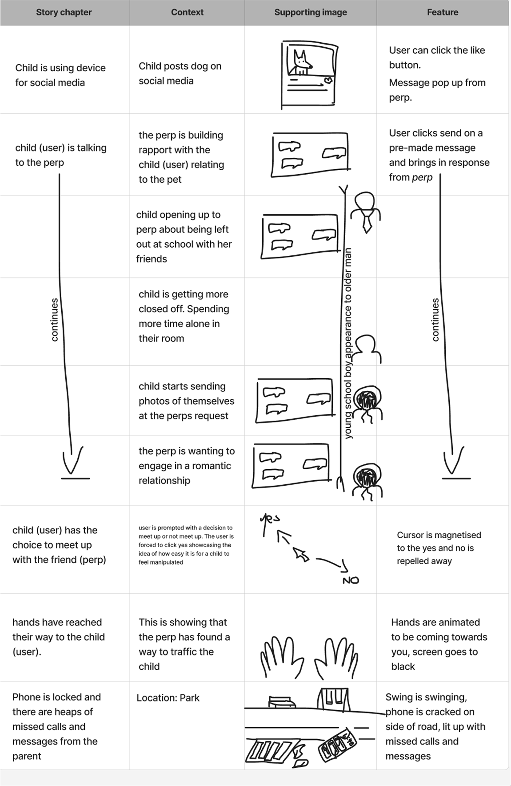

Project Overview
My Role
UI design, UX design, Prototyping, Experimental Design
UI design, UX design, Prototyping, Experimental Design
Tools
Figma, Touchdesigner
Figma, Touchdesigner
Timeline
8 Weeks
8 Weeks
The Problem
Since 2021 the New Zealand government hasn't complied to the minimum standards for addressing human trafficking. New Zealand is in heavy need of more awareness of the issue as most people don't know this happens on their home turf.
The Solution
This project uses narrative design to raise awareness about child exploitation by illustrating a fictional story from a child's perspective. It aims to foster empathy, highlight online grooming tactics, and promote understanding, while respectfully avoiding the use of real victim stories.
Research and Insights
Key Findings
- Since 2021 the New Zealand government hasn't complied to the minimum standards for addressing human trafficking
- In 2023, over 29,440 reports of online child exploitation were received by NZ authorities.

Primary user persona: Emma, 38, Parent with 12 year old daughter
Story-drafting
